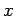

Inhalt Index DeskTop Bronstein

 Unendliche Reihen Funktionenreihen Potenzreihen Definition der Potenzreihe, Konvergenz
Unendliche Reihen Funktionenreihen Potenzreihen Definition der Potenzreihe, Konvergenz


Eine Potenzreihe konvergiert entweder nur für x = x0 oder für alle Werte von , oder es gibt eine Zahl , den Konvergenzradius (s. Abbildung), so daß die Reihe für absolut konvergiert und für divergiert.
Der Konvergenzradius kann mittels
| (7.77) |
bestimmt werden, falls die Grenzwerte existieren. In den Endpunkten des Konvergenzintervalls und für die Reihe (7.76a) und und für die Reihe (7.76b) kann die Reihe entweder konvergent oder divergent sein. Existieren diese Grenzwerte nicht, dann ist an Stelle des gewöhnlichen Limes () der Limes superior zu nehmen (s. Lit. 7.8, Bd. I).